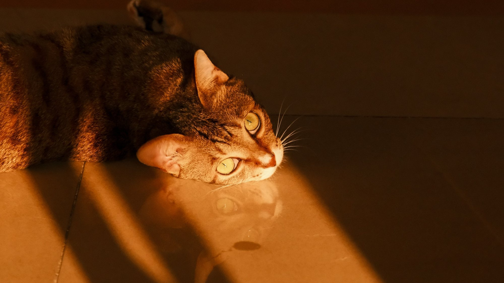
I try to capture them at eye level, in light.
01Stripes of light, eyes wide open.
A single slant of light, and everything else let go dark.
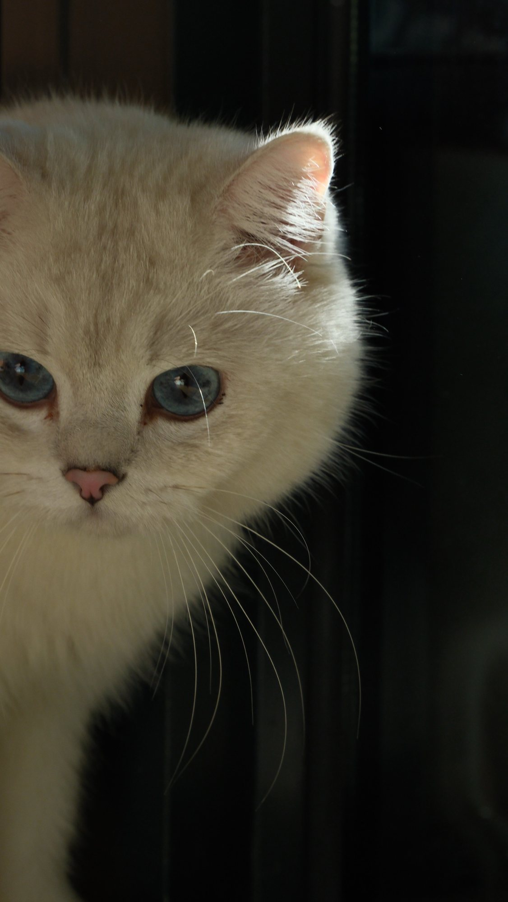
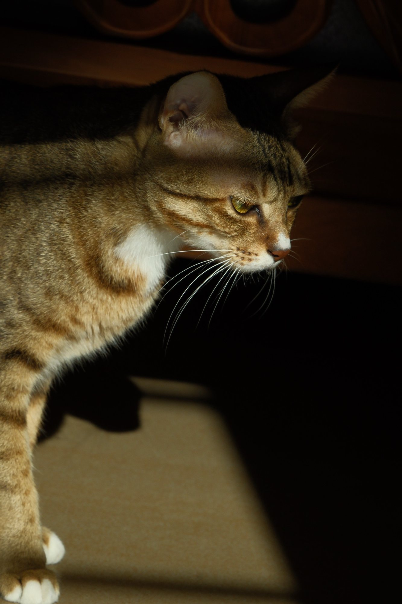
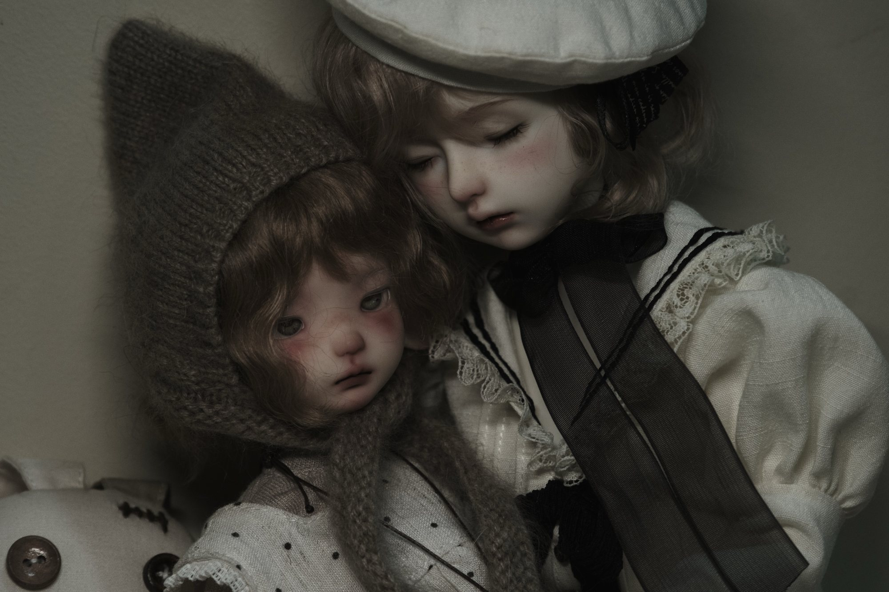
Faces, and the moment they gaze back.
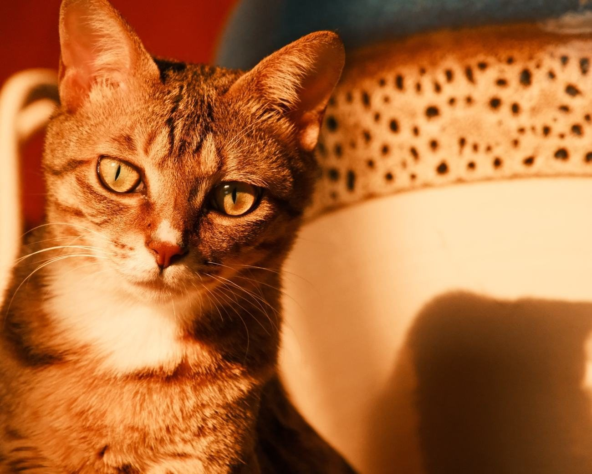
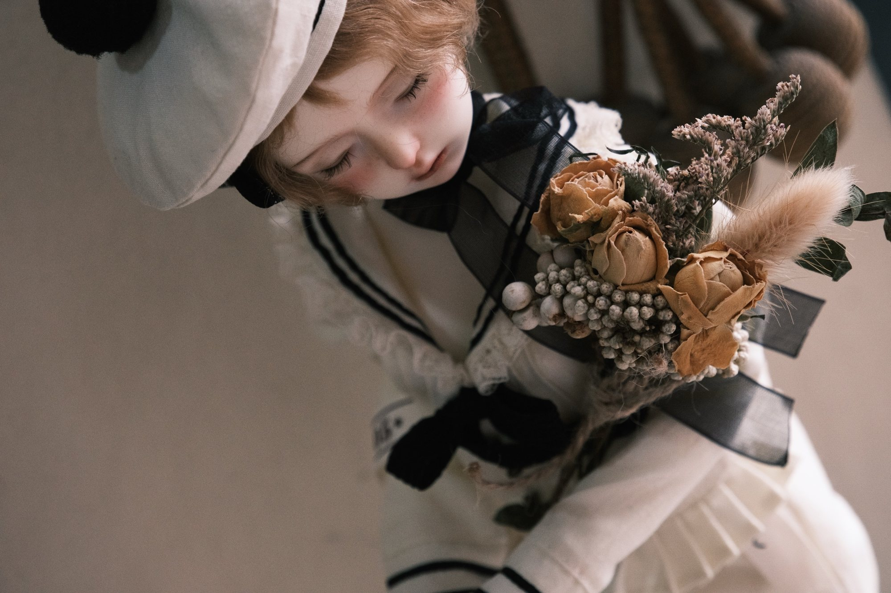
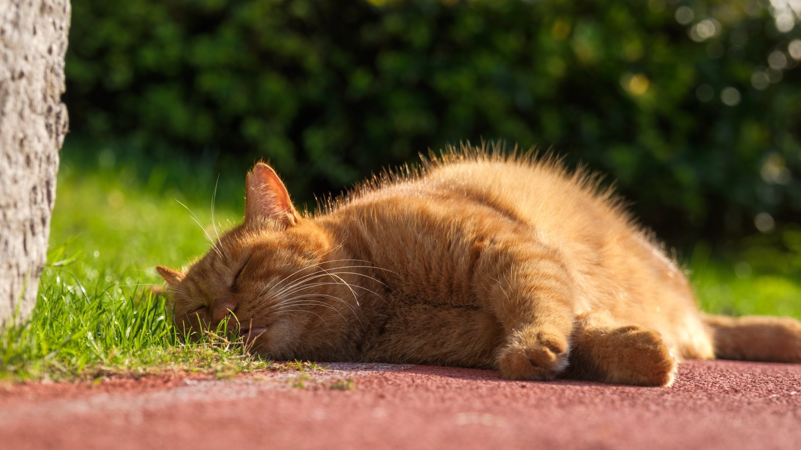
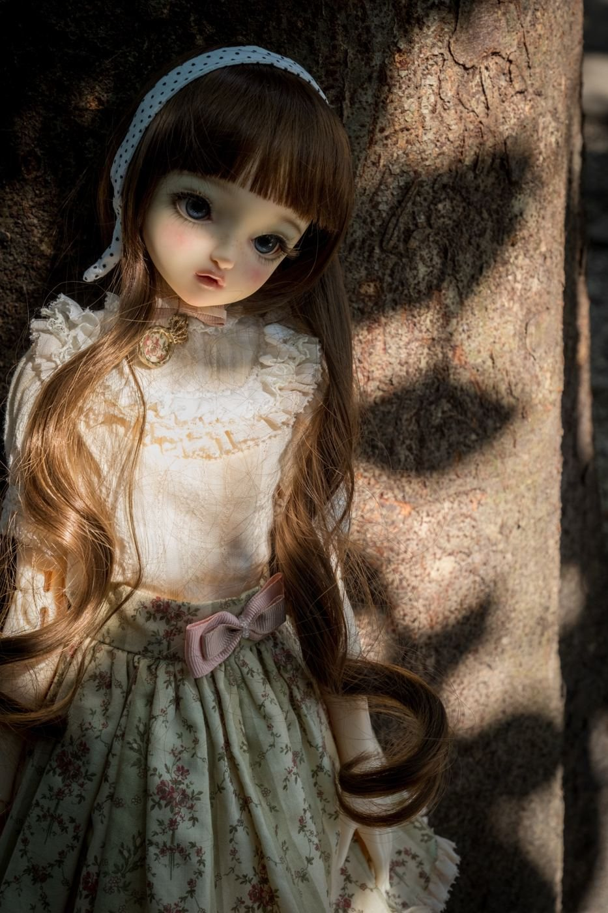
Hands, siblings, and the quiet trust between them.
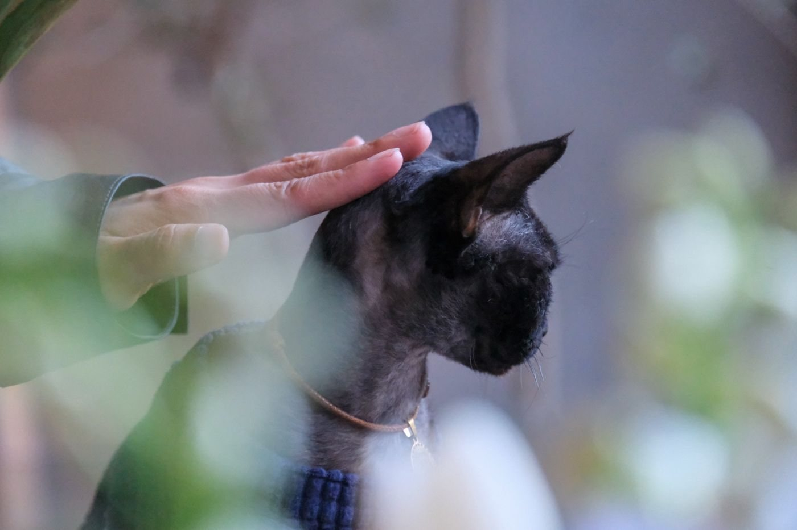
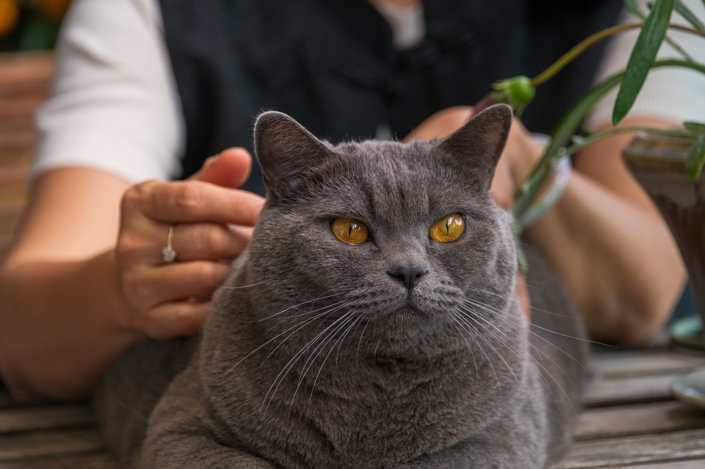
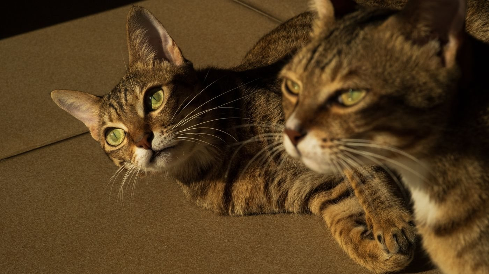
Strays and wanderers, on their own terms.
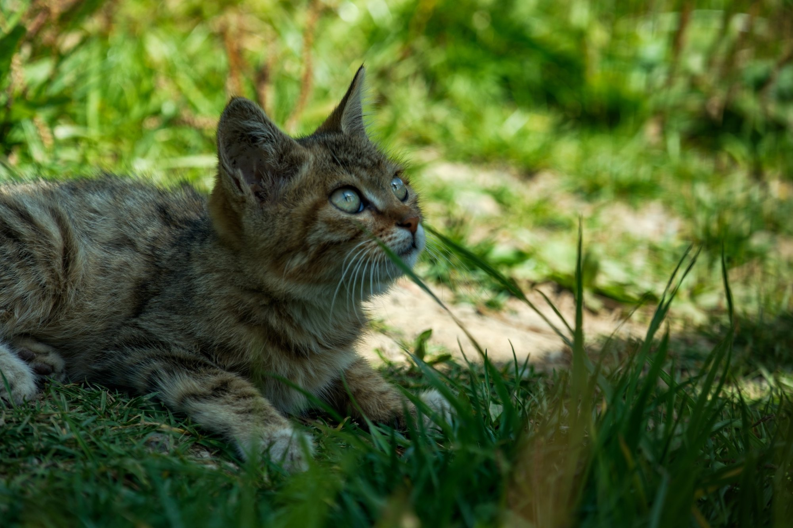
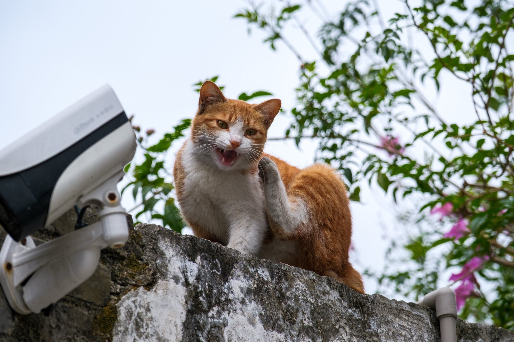
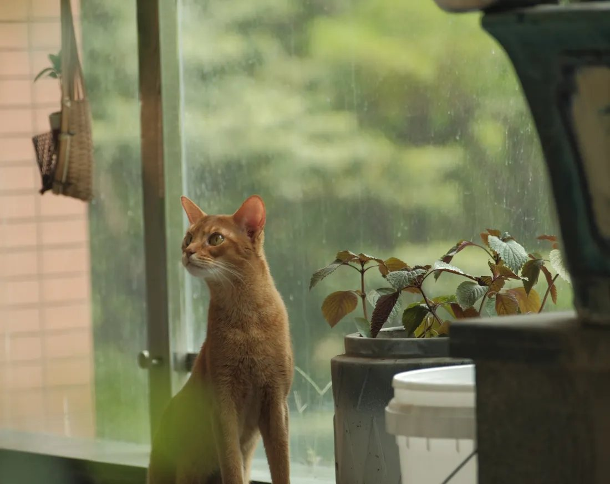
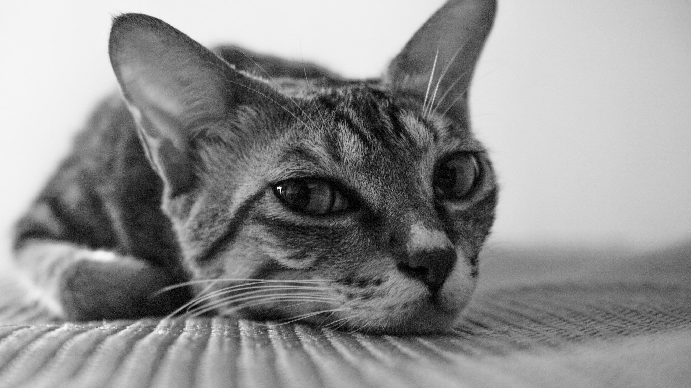